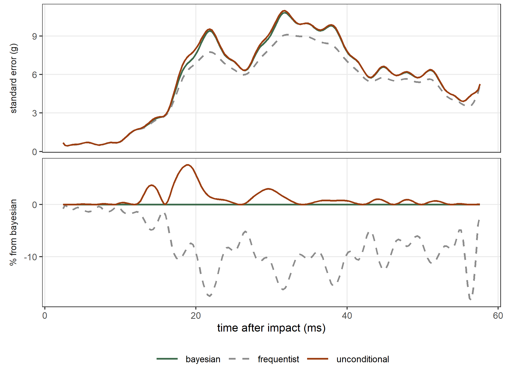
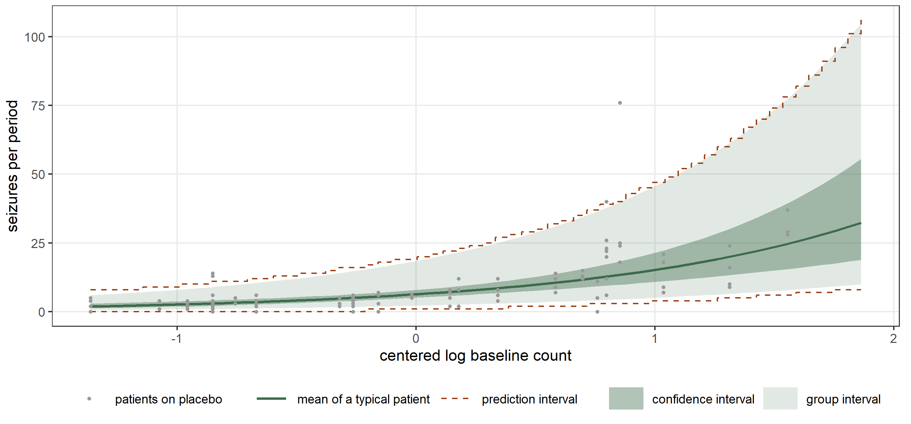
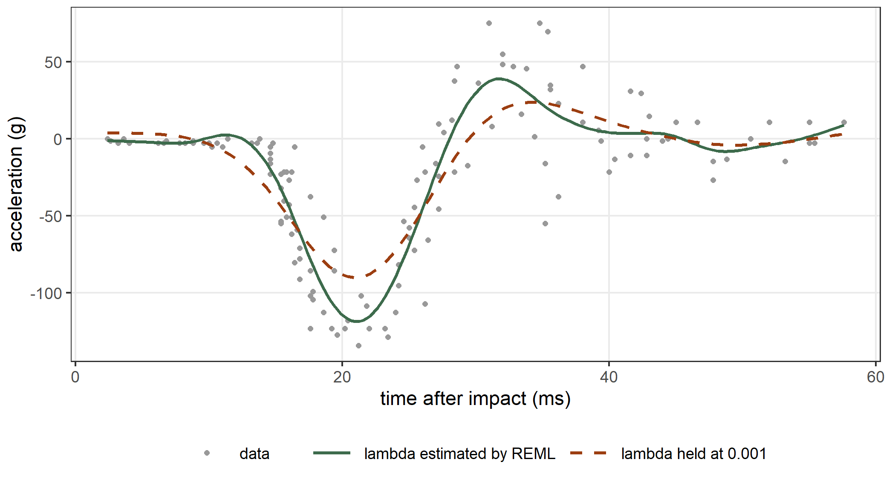

library(statmodels7)
fit0 <- statmod(accel ~ s(times, bspline_smooth(k = 20)),
distrib = gaussian1_distrib(), data = mcycle)
fit1 <- statmod(accel ~ s(times, bspline_smooth(k = 20)) |
sigma ~ s(times, bspline_smooth(k = 10)),
distrib = gaussian1_distrib(), data = mcycle)2 Beyond the basics
Chapter 1 fitted one model and read what statmod() returns for it. This chapter goes further in nine directions. We compare the three variance matrices that a penalized fit offers, and we explain the two log-likelihoods of a model with random effects. We test a single coefficient with four different statistics, invert these tests into confidence intervals, and compare two nested models with a likelihood ratio test. Then we predict for a group that the data do not contain, start a fit from the estimates of another fit, change the criterion that estimates the hyperparameters, and use prior weights, offsets and parameters with a known value.
We start again from the two models of Chapter 1 for the motorcycle data: a smooth mean with a constant standard deviation, and a smooth mean with a smooth standard deviation.
2.1 Three variance matrices
The summary of Chapter 1 ends with the line “95% intervals, bayesian variance”. Every standard error of a penalized model depends on a choice of variance matrix, and statmodels7 offers three of them. As in Chapter 1, let \(H\) be the Fisher information of the coefficients at the fit, and let \(S\) be the matrix of second derivatives of the penalty. The first two matrices are \[
V_b = (H + S)^{-1}, \qquad V_f = (H + S)^{-1} H (H + S)^{-1} .
\] \(V_f\) is the sampling variance of the penalized estimator when the smoothing parameters are fixed. \(V_b\) is the posterior variance of the coefficients when we read the penalty as a gaussian prior, as REML does. \(V_b\) is larger than \(V_f\). The difference accounts for the bias that the penalty introduces: a penalized curve is pulled towards a straight line, so an interval built from \(V_f\) covers the true curve less often than its nominal level. Intervals built from \(V_b\) have close to their nominal coverage when we average over the points of the curve (Wahba 1983; Nychka 1988; Marra and Wood 2012). This is why \(V_b\) is the default.
Both matrices treat the smoothing parameters as known, although REML estimated them from the same data. The third matrix adds the uncertainty of the smoothing parameters (Wood, Pya, and Säfken 2016): \[ V_u = V_b + J V_\theta J^\top, \qquad J = \frac{\partial \hat\beta}{\partial \theta}, \] where \(\theta\) contains the logarithms of the smoothing parameters and \(V_\theta\) is their variance, which we read from the curvature of the REML criterion. The matrix \(J\) measures how far the estimated coefficients move when a smoothing parameter moves.
We choose among the three matrices with the argument type of vcov(), confint(), summary() and predict(). We print the same three rows and columns as in Chapter 1 under each matrix:
keep <- c("mu:(Intercept)", "mu:s(times).lin", "sigma:(Intercept)")
vcov(fit1, type = "bayesian")[keep, keep]
#> mu:(Intercept) mu:s(times).lin sigma:(Intercept)
#> mu:(Intercept) 4.2451143 0.8571402 0.000000000
#> mu:s(times).lin 0.8571402 1.8063218 0.000000000
#> sigma:(Intercept) 0.0000000 0.0000000 0.004683996
vcov(fit1, type = "frequentist")[keep, keep]
#> mu:(Intercept) mu:s(times).lin sigma:(Intercept)
#> mu:(Intercept) 4.1792492 0.8566125 0.000000000
#> mu:s(times).lin 0.8566125 1.7810399 0.000000000
#> sigma:(Intercept) 0.0000000 0.0000000 0.003759398
vcov(fit1, type = "unconditional")[keep, keep]
#> mu:(Intercept) mu:s(times).lin sigma:(Intercept)
#> mu:(Intercept) 4.294755946 0.8323187099 0.0012041174
#> mu:s(times).lin 0.832318710 1.8187328572 -0.0006020749
#> sigma:(Intercept) 0.001204117 -0.0006020749 0.0048517219The first two matrices have a zero block between mu and sigma, as in Chapter 1. The third matrix does not. The smoothing parameters of the two equations are estimated together, so a change of one of them moves the coefficients of both equations, and the term \(J V_\theta J^\top\) connects them. The function confint() takes the same argument:
confint(fit1, parm = keep, type = "unconditional")
#> parameter term coefficient
#> mu:(Intercept) mu linpar (Intercept)
#> mu:s(times).lin mu s(times, bspline_smooth(k = 20)) s(times).lin
#> sigma:(Intercept) sigma linpar (Intercept)
#> estimate se lower upper
#> mu:(Intercept) -25.103779 2.0723793 -29.165567 -21.041990
#> mu:s(times).lin 14.086513 1.3486040 11.443298 16.729729
#> sigma:(Intercept) 2.703846 0.0696543 2.567326 2.840366We compare the three standard errors of the fitted mean on a grid of 200 times:
grid <- data.frame(times = seq(from = min(mcycle$times),
to = max(mcycle$times), length.out = 200))
pb <- predict(fit1, what = "mu", newdata = grid, se = TRUE, type = "bayesian")
pf <- predict(fit1, what = "mu", newdata = grid, se = TRUE,
type = "frequentist")
pu <- predict(fit1, what = "mu", newdata = grid, se = TRUE,
type = "unconditional")
head(pb, n = 3)
#> fit se lower upper
#> 1 -0.5089894 0.6808085 -1.843350 0.82537074
#> 2 -0.9574009 0.4756574 -1.889672 -0.02512956
#> 3 -1.3133117 0.4364889 -2.168814 -0.45780916
head(pf, n = 3)
#> fit se lower upper
#> 1 -0.5089894 0.6754417 -1.832831 0.81485200
#> 2 -0.9574009 0.4752233 -1.888821 -0.02598038
#> 3 -1.3133117 0.4346493 -2.165209 -0.46141471
head(pu, n = 3)
#> fit se lower upper
#> 1 -0.5089894 0.6808162 -1.843365 0.82538576
#> 2 -0.9574009 0.4756805 -1.889718 -0.02508419
#> 3 -1.3133117 0.4365062 -2.168848 -0.45777523The three predictions fit are the same, and only the standard errors differ. Figure 2.1 shows them over the whole time range. The frequentist standard error is smaller than the Bayesian one at every time, by 8.5% in the median and by up to 18.3%. In the first 15 milliseconds the two are almost equal, because there the curve is nearly flat and the penalty moves it very little. The unconditional standard error is larger than the Bayesian one at every time, by 0.5% in the median and by 7.6% at 18.8 milliseconds. The two curves differ where the curve bends most, because there the fitted mean depends most on the smoothing parameter.

Which of the three intervals covers the true curve at its nominal rate? We answer with a small simulation study. The function rstatmod() of Chapter 1 draws data from a model that we write, and when we do not give the coefficients it draws them: here it draws a smooth function of \(x\) from the prior that the penalty defines, with a smoothing parameter drawn as well. We draw one such function on 100 equally spaced points and 40 data sets from it. We fit each data set and count how many of the 100 true means each pointwise 95% interval contains.
set.seed(2)
xd <- data.frame(x = seq(from = 0, to = 1, length.out = 100))
sim <- rstatmod(y ~ s(x), distrib = gaussian1_distrib(), data = xd,
n_sim = 40)
cover <- matrix(NA, nrow = 40, ncol = 3,
dimnames = list(NULL, c("bayesian", "frequentist",
"unconditional")))
for (k in 1:40) {
fit <- statmod(y ~ s(x), distrib = gaussian1_distrib(),
data = sim$data[[k]])
truth <- sim$theta[[k]]$mu
p_b <- predict(fit, what = "mu", newdata = xd, se = TRUE, type = "bayesian")
p_f <- predict(fit, what = "mu", newdata = xd, se = TRUE,
type = "frequentist")
p_u <- predict(fit, what = "mu", newdata = xd, se = TRUE,
type = "unconditional")
cover[k, "bayesian"] <- mean(p_b$lower <= truth & truth <= p_b$upper)
cover[k, "frequentist"] <- mean(p_f$lower <= truth & truth <= p_f$upper)
cover[k, "unconditional"] <- mean(p_u$lower <= truth & truth <= p_u$upper)
}
colMeans(cover)
#> bayesian frequentist unconditional
#> 0.93850 0.92025 0.94325Averaged over the points and the data sets, the Bayesian intervals cover the true mean 93.8% of the time, the frequentist ones 92.0% and the unconditional ones 94.3%, against a nominal 95%. The frequentist intervals cover less because \(V_f\) does not include the bias of the penalized curve. This agrees with Marra and Wood (2012), and it is the reason for the default.
2.2 Which likelihood
A model with random effects has two log-likelihoods. We use a classic data set to explain them. The data frame Orthodont from the nlme package gives the distance, in millimeters, from the pituitary to the pterygomaxillary fissure of 27 children, measured every two years from age 8 to age 14 (Potthoff and Roy 1964; Pinheiro and Bates 2000). We center the age at 11 years and give each child its own intercept and its own slope in age: \[
y_{ij} \sim \mathrm{N}(\mu_{ij}, \sigma), \qquad
\mu_{ij} = \beta_0 + \beta_1 a_{ij} + b_{0i} + b_{1i} a_{ij}, \qquad
(b_{0i}, b_{1i}) \sim \mathrm{N}(0, \Sigma_b),
\] where \(a_{ij}\) is the centered age of child \(i\) at its \(j\)-th measurement. We center the age inside the formula, with I(age - 11). The term random(~ I(age - 11) | Subject) gives each child the two random effects, and by default their covariance matrix \(\Sigma_b\) is unstructured, so the two effects can be correlated.
data(Orthodont, package = "nlme")
reml1 <- statmod(distance ~ I(age - 11) + random(~ I(age - 11) | Subject),
distrib = gaussian1_distrib(), data = Orthodont)
summary(reml1)
#> A statmod fit
#>
#> Call: statmod(formula = distance ~ I(age - 11) + random(~I(age - 11) |
#> Subject), distrib = gaussian1_distrib(), data = Orthodont)
#>
#> Distribution: gaussian1 Observations: 108
#>
#> === mu [identity link]
#>
#> Parametric terms
#> estimate se z p lower upper
#> (Intercept) 24.02 0.4297 55.91 < 1e-16 23.18 24.87
#> I(age - 11) 0.6602 0.07125 9.265 < 1e-16 0.5205 0.7998
#>
#> random(~I(age - 11) | Subject) [54 coefficients, edf 31.74]
#> estimate se lower upper
#> sd[(Intercept)] [reml] 2.134 0.3244 1.584 2.875
#> sd[I(age - 11)] [reml] 0.2264 0.09153 0.1025 0.5001
#> cor[(Intercept), I(age - 11)] [reml] 0.5026 0.3152 -0.2671 0.8808
#> predicted effects (27 levels of Subject)
#> Min. 1st Qu. Median Mean 3rd Qu. Max.
#> (Intercept) -5.038 -0.9243 -0.2157 0 0.8998 4.976
#> I(age - 11) -0.2506 -0.1068 0.009858 0 0.08319 0.4137
#>
#> === sigma [log link]
#>
#> Parametric terms
#> estimate se z p lower upper
#> (Intercept) 0.2701 0.08656 3.12 0.00181 0.1004 0.4397
#>
#> 95% intervals, bayesian variance
#> conditional log-likelihood -165.543329 effective df 34.74
#> cAIC 400.560 cBIC 493.727
#> fitted in 510 ms
#> inner max |grad|/se 4.4e-15 min eigen 0.042
#> outer max |grad|/se 8.9e-07 min eigen 0.56
#> 1 note: print(summary(fit), notes = TRUE)statmodels7 reads the random effects as coefficients with a penalty. The penalty is minus the logarithm of the gaussian density of the random effects, and its hyperparameters describe \(\Sigma_b\). The summary reports them as the two standard deviations and the correlation, estimated by REML. The function lme() of the nlme package fits the same model:
library(nlme)
lme1 <- lme(distance ~ I(age - 11), random = ~ I(age - 11) | Subject,
data = Orthodont)
fixef(lme1)
#> (Intercept) I(age - 11)
#> 24.0231481 0.6601852
VarCorr(lme1)
#> Subject = pdLogChol(I(age - 11))
#> Variance StdDev Corr
#> (Intercept) 4.55535983 2.1343289 (Intr)
#> I(age - 11) 0.05126956 0.2264278 0.503
#> Residual 1.71620530 1.3100402The two packages give the same estimates of the fixed effects, the same standard deviations and the same correlation. The residual standard deviation of lme() is \(\exp(\hat\gamma_0)\), the exponential of the intercept of sigma:
exp(coef(reml1)$sigma)
#> (Intercept)
#> 1.31004The two log-likelihoods of the model differ in how they treat the random effects \(b\). The conditional log-likelihood is computed at the estimated random effects \(\hat b\): \[
\ell_C = \log f(y \mid \hat b).
\] It is the one that logLik() returns by default, and the one that cAIC uses. The marginal log-likelihood integrates the random effects out: \[
\ell_M = \log \int f(y \mid b)\, \pi(b)\, db ,
\] where \(\pi\) is the gaussian density of \(b\). statmodels7 computes the integral by the Laplace method, which is exact for a gaussian response. REML also integrates the unpenalized coefficients \(\beta_0\) and \(\beta_1\) (Patterson and Thompson 1971). The argument type = "marginal" of logLik() returns the criterion that the fit maximized: the REML criterion by default, and the marginal log-likelihood when the fit used outer_criterion = ml().
logLik(reml1)
#> 'log Lik.' -165.5433 (df=34.73645)
logLik(reml1, type = "marginal")
#> 'log Lik.' -221.3183 (df=6)
logLik(lme1)
#> 'log Lik.' -221.3183 (df=6)The marginal value is the restricted log-likelihood that lme() reports. Its attribute df counts the two fixed effects, the three parameters of \(\Sigma_b\) and \(\sigma\). The conditional value is larger, because \(f(y \mid
\hat b)\) uses the random effects of each child, and its df is the total effective degrees of freedom of Chapter 1. The two values answer different questions. The marginal log-likelihood describes a new child drawn from the population, and the conditional one describes the 27 children that we observed (Vaida and Blanchard 2005).
2.3 Testing one coefficient
The column z of the summary is a Wald statistic, which tests that a coefficient is zero. Three other statistics test a coefficient \(\beta_j\) against any value \(\beta_{j0}\). We write \(\ell\) for the log-likelihood, \(\hat\theta\) for the estimate of all the coefficients, and \(\tilde\theta\) for the estimate when \(\beta_j\) is held at \(\beta_{j0}\). Let \(U(\theta)\) be the gradient of \(\ell\) and \(I(\theta)\) the Fisher information. The four statistics are \[
\begin{aligned}
W &= (\hat\beta_j - \beta_{j0})^2 / \mathrm{se}(\hat\beta_j)^2
&& \text{(Wald)}, \\
L &= 2\{\ell(\hat\theta) - \ell(\tilde\theta)\}
&& \text{(likelihood ratio)}, \\
R &= U(\tilde\theta)^\top I(\tilde\theta)^{-1} U(\tilde\theta)
&& \text{(Rao score)}, \\
G &= U_j(\tilde\theta)\, (\hat\beta_j - \beta_{j0})
&& \text{(Terrell gradient)}.
\end{aligned}
\] If \(\beta_j = \beta_{j0}\), each of them has approximately a \(\chi^2\) distribution with one degree of freedom (Cox and Hinkley 1974; Terrell 2002). \(W\) needs only the fit that we have. The other three need the model fitted again with \(\beta_j\) held at \(\beta_{j0}\). For a penalized model the three use the penalized log-likelihood, with the smoothing parameters held at their estimates.
We use a nonlinear model. The data frame Puromycin gives the initial rate of an enzymatic reaction, in counts per minute per minute, against the concentration of the substrate, in parts per million (Bates and Watts 1988). We use the 12 measurements on cells treated with the antibiotic puromycin. The Michaelis–Menten model describes the rate as \[
y_i \sim \mathrm{N}(\mu_i, \sigma), \qquad
\mu_i = \frac{V_m\, c_i}{K + c_i},
\] where \(c_i\) is the concentration. The parameter \(V_m\) is the largest rate, and \(K\) is the concentration at which the rate reaches half of \(V_m\). The term nl() takes the formula of the mean as a function of its parameters, and a later chapter describes it in full. The formula of the model starts with 0 because the curve has no intercept.
puro <- Puromycin[Puromycin$state == "treated", ]
fit_p <- statmod(rate ~ 0 + nl(~ Vm * conc / (K + conc)),
distrib = gaussian1_distrib(), data = puro)
coef(fit_p)
#> $mu
#> nl.Vm nl.K
#> 212.68374314 0.06412128
#>
#> $sigma
#> (Intercept)
#> 2.391828The function statmod_test() computes one of the four statistics for one coefficient. Its arguments name the parameter of the distribution, the coefficient, the value under the null hypothesis and the statistic. We test \(K = 0.05\) with each of the four:
statmod_test(fit_p, param = "mu", coefname = "nl.K", value = 0.05,
test = "wald")
#>
#> Wald test on a statmod fit
#>
#> coefficient: mu:nl.K
#> X-squared = 2.908, df = 1, p-value 0.08814
#> alternative hypothesis: true nl.K is not equal to 0.05
#> estimate: 0.06412
statmod_test(fit_p, param = "mu", coefname = "nl.K", value = 0.05,
test = "lr")
#>
#> Likelihood-ratio test on a statmod fit
#>
#> coefficient: mu:nl.K
#> X-squared = 3.324, df = 1, p-value 0.06825
#> alternative hypothesis: true nl.K is not equal to 0.05
#> estimate: 0.06412
statmod_test(fit_p, param = "mu", coefname = "nl.K", value = 0.05,
test = "score")
#>
#> Rao score test on a statmod fit
#>
#> coefficient: mu:nl.K
#> X-squared = 2.604, df = 1, p-value 0.1066
#> alternative hypothesis: true nl.K is not equal to 0.05
#> estimate: 0.06412
statmod_test(fit_p, param = "mu", coefname = "nl.K", value = 0.05,
test = "gradient")
#>
#> Terrell gradient test on a statmod fit
#>
#> coefficient: mu:nl.K
#> X-squared = 3.211, df = 1, p-value 0.07316
#> alternative hypothesis: true nl.K is not equal to 0.05
#> estimate: 0.06412The four statistics range from 2.60 for the score test to 3.32 for the likelihood ratio, with p-values between 0.068 and 0.107. With 12 observations they do not agree closely, and none of them rejects \(K = 0.05\) at the 5% level.
We can compute two of them by hand. The Wald statistic comes from the estimate and the standard error that confint() reports:
ci_k <- confint(fit_p, parm = "mu:nl.K")
(ci_k$estimate - 0.05)^2 / ci_k$se^2
#> [1] 2.908062For the likelihood ratio, statmod_test() compares the maximum log-likelihood of the full model with the maximum log-likelihood of the model with \(K\) held at 0.05, with \(\sigma\) estimated by maximum likelihood in both. The function nls() fits the full model by least squares. When \(K\) is held at 0.05 the mean is \(V_m\) times the known variable \(c_i/(0.05 + c_i)\), so lm() without an intercept fits the restricted model. The function logLik() of both returns the maximum log-likelihood:
nls_p <- nls(rate ~ Vm * conc / (K + conc), data = puro,
start = list(Vm = 200, K = 0.05))
puro$x05 <- puro$conc / (0.05 + puro$conc)
lm_05 <- lm(rate ~ 0 + x05, data = puro)
2 * (as.numeric(logLik(nls_p)) - as.numeric(logLik(lm_05)))
#> [1] 3.324496The argument test of summary() replaces the Wald statistic of every row with another of the four statistics, each testing that its coefficient is zero. The column then holds the signed square root of the statistic, which has approximately a standard gaussian distribution, and its heading is r instead of z:
summary(fit_p, test = "lr")
#> A statmod fit
#>
#> Call: statmod(formula = rate ~ 0 + nl(~Vm * conc/(K + conc)), distrib = gaussian1_distrib(),
#> data = puro)
#>
#> Distribution: gaussian1 Observations: 12
#>
#> === mu [identity link]
#>
#> Parametric terms
#> estimate se r p lower upper
#> nl.Vm 212.7 6.947 8.069 7.115e-16 199.1 226.3
#> nl.K 0.06412 0.008281 6.246 4.215e-10 0.04789 0.08035
#>
#> === sigma [log link]
#>
#> Parametric terms
#> estimate se r p lower upper
#> (Intercept) 2.392 0.2236 33.59 < 1e-16 1.954 2.83
#>
#> 95% intervals, bayesian variance; lr test, signed root
#> conditional log-likelihood -44.729377 effective df 3.00
#> cAIC 95.459 cBIC 96.913
#> fitted in 580 ms
#> inner max |grad|/se 3.6e-12 min eigen 0.23
#> outer max |grad|/se 8.1e-05 min eigen 1
#> 1 note: print(summary(fit), notes = TRUE)Each row needs one restricted fit, so summary(test = "lr") costs a few more fits than summary(). Only the statistic and the p-value change. The interval of each row is still the Wald interval, and the next section explains how to replace it.
2.4 Intervals by inversion
A 95% confidence interval for \(\beta_j\) contains the values \(\beta_{j0}\) that a test at the 5% level does not reject. The Wald interval \(\hat\beta_j \pm 1.96\,\mathrm{se}\) is the set of values where \(W \le \chi^2_{1,0.95} = 3.84\), and it is symmetric around the estimate. We obtain an interval from each of the other three statistics in the same way, by solving for the two values of \(\beta_{j0}\) where the statistic equals 3.84. These intervals can be asymmetric. We choose the statistic with the argument test of confint().
We also set the argument readable to FALSE. Some model terms estimate their parameters on working coordinates, which keep the estimation stable but are hard to interpret. For example, the score-driven filter gas() of a later chapter estimates the persistence of the filter through a partial autocorrelation, and confint() reports by default the autoregressive coefficient computed from it. This default is readable = TRUE. A test holds one working coordinate at a value, so an inverted interval exists only for the working coordinates, and confint() with test other than "wald" requires readable = FALSE. In the Michaelis–Menten model the coefficients are \(V_m\) and \(K\) themselves, so this argument does not change the result here:
confint(fit_p, parm = "mu:nl.K")
#> parameter term coefficient estimate se
#> mu:nl.K mu nl(~Vm * conc/(K + conc)) nl.K 0.06412128 0.008280799
#> lower upper
#> mu:nl.K 0.04789121 0.08035135
confint(fit_p, parm = "mu:nl.K", test = "lr", readable = FALSE)
#> parameter term coefficient estimate se
#> mu:nl.K mu nl(~Vm * conc/(K + conc)) nl.K 0.06412128 0.008280799
#> lower upper
#> mu:nl.K 0.04889638 0.08301354
confint(fit_p, parm = "mu:nl.K", test = "score", readable = FALSE)
#> parameter term coefficient estimate se
#> mu:nl.K mu nl(~Vm * conc/(K + conc)) nl.K 0.06412128 0.008280799
#> lower upper
#> mu:nl.K 0.04601589 0.08735601
confint(fit_p, parm = "mu:nl.K", test = "gradient", readable = FALSE)
#> parameter term coefficient estimate se
#> mu:nl.K mu nl(~Vm * conc/(K + conc)) nl.K 0.06412128 0.008280799
#> lower upper
#> mu:nl.K 0.04848417 0.08808743The likelihood ratio interval runs from 0.0489 to 0.0830. It extends 0.0152 below the estimate \(\hat K = 0.0641\) and 0.0189 above it, while the Wald interval extends 0.0162 on both sides. The Wald statistic is a quadratic function of \(K\), so its interval is symmetric. The likelihood ratio statistic is not, because the log-likelihood of this model is not a quadratic function of \(K\): it rises more steeply below \(\hat K\) than above it.
The function confint() of nls() gives another interval:
confint(nls_p)
#> 2.5% 97.5%
#> Vm 197.30212848 229.29006489
#> K 0.04692517 0.08615995It runs from 0.0469 to 0.0862, so it is wider. nls() uses the profile \(t\) statistic (Bates and Watts 1988) \[
\tau(K_0) = \mathrm{sign}(\hat K - K_0)\,
\frac{\sqrt{S(K_0) - S(\hat K)}}{s},
\] where \(S(K_0)\) is the residual sum of squares with \(K\) held at \(K_0\) and \(V_m\) estimated, and \(s^2 = S(\hat K)/(n - 2)\). For a gaussian model the likelihood ratio statistic is \(L = n \log\{S(K_0)/S(\hat K)\}\), so \(L = n\log\{1 + \tau^2/(n-2)\}\). The two statistics are functions of each other, and the two intervals come from the same test. They differ in the reference distribution. nls() compares \(\tau\) with the quantiles of the \(t\) distribution with \(n - 2\) degrees of freedom, which is exact for a linear model. statmodels7 compares \(L\) with the quantile 3.84 of the \(\chi^2_1\) distribution, which corresponds to a smaller cutoff for \(|\tau|\):
n_p <- nrow(puro)
qt(p = 0.975, df = n_p - 2)
#> [1] 2.228139
sqrt((n_p - 2) * (exp(qchisq(p = 0.95, df = 1) / n_p) - 1))
#> [1] 1.942409The \(\chi^2_1\) distribution is the limit of the distribution of \(L\) as \(n\) grows. With 12 observations the limit is optimistic, and the interval of nls() is the better one.
2.5 Comparing two models
The tests of the previous sections hold one coefficient at a value. To compare two nested models we use the likelihood ratio of the two fits. We return to the Orthodont data and ask whether boys and girls have different mean distances. The second model adds the sex of the child:
ml1 <- statmod(distance ~ I(age - 11) + random(~ I(age - 11) | Subject),
distrib = gaussian1_distrib(), data = Orthodont,
outer_criterion = ml())
ml2 <- statmod(distance ~ I(age - 11) + Sex + random(~ I(age - 11) | Subject),
distrib = gaussian1_distrib(), data = Orthodont,
outer_criterion = ml())Both fits use outer_criterion = ml(), so they maximize the marginal log-likelihood. The likelihood ratio statistic is twice the difference of the two maximized marginal log-likelihoods, and under the smaller model it has approximately a \(\chi^2\) distribution with one degree of freedom:
l1 <- logLik(ml1, type = "marginal")
l2 <- logLik(ml2, type = "marginal")
lr <- 2 * (as.numeric(l2) - as.numeric(l1))
lr
#> [1] 6.37644
pchisq(lr, df = 1, lower.tail = FALSE)
#> [1] 0.01156451The function anova() of nlme gives the same statistic and p-value for the two models fitted by maximum likelihood:
lme1_ml <- lme(distance ~ I(age - 11), random = ~ I(age - 11) | Subject,
data = Orthodont, method = "ML")
lme2_ml <- lme(distance ~ I(age - 11) + Sex, random = ~ I(age - 11) | Subject,
data = Orthodont, method = "ML")
an <- anova(lme1_ml, lme2_ml)
an$logLik
#> [1] -219.6058 -216.4176
an$L.Ratio
#> [1] NA 6.37644
an[["p-value"]]
#> [1] NA 0.01156451We do not compare the two models with REML. The REML criterion is the likelihood of the residuals of the unpenalized part of the mean, that is, of the combinations of \(y\) that do not depend on the unpenalized coefficients. When we add Sex to the model, these combinations change. So the two REML criteria describe two different functions of the data, and their difference is not a likelihood ratio statistic (Pinheiro and Bates 2000, sec. 2.4):
reml2 <- statmod(distance ~ I(age - 11) + Sex + random(~ I(age - 11) | Subject),
distrib = gaussian1_distrib(), data = Orthodont)
2 * (as.numeric(logLik(reml2, type = "marginal")) -
as.numeric(logLik(reml1, type = "marginal")))
#> [1] 7.402828We use reml() to estimate the variances of one model, and ml() to compare models that differ in their unpenalized terms.
The test of Section 2.3 gives a third answer for the coefficient of Sex:
statmod_test(reml2, param = "mu", coefname = "SexFemale", value = 0,
test = "lr")
#>
#> Likelihood-ratio test on a statmod fit
#>
#> coefficient: mu:SexFemale
#> X-squared = 7.994, df = 1, p-value 0.004694
#> alternative hypothesis: true SexFemale is not equal to 0
#> estimate: -2.145This statistic is 7.99, against 6.38 from the marginal log-likelihoods. The two tests treat the covariance matrix \(\Sigma_b\) of the random effects in different ways. In the restricted fit of statmod_test(), \(\Sigma_b\) stays at the estimate of the full model reml2, and only the coefficients and \(\sigma\) are estimated again. In the comparison of the marginal log-likelihoods, each model estimates its own \(\Sigma_b\). Sex does not change within a child, so without Sex the difference between boys and girls becomes a difference between children, and the variance of the random intercepts grows to absorb it. The fits of lme() by maximum likelihood show this:
VarCorr(lme1_ml)
#> Subject = pdLogChol(I(age - 11))
#> Variance StdDev Corr
#> (Intercept) 4.37075978 2.0906362 (Intr)
#> I(age - 11) 0.04619257 0.2149246 0.521
#> Residual 1.71620379 1.3100396
VarCorr(lme2_ml)
#> Subject = pdLogChol(I(age - 11))
#> Variance StdDev Corr
#> (Intercept) 3.07760167 1.7543095 (Intr)
#> I(age - 11) 0.04619257 0.2149246 0.202
#> Residual 1.71620314 1.3100394The standard deviation of the random intercepts is larger in the model without Sex. This model explains part of the effect of sex with the random intercepts, so its marginal log-likelihood is closer to that of the full model, and the likelihood ratio is smaller.
2.6 Predictions with random effects
A model with random effects raises one more question about predictions: what to predict for a group that the data do not contain. The data frame epil from the MASS package gives the number of epileptic seizures of 59 patients in four periods of two weeks, in a trial of the drug progabide (Thall and Vail 1990). The covariates are the treatment trt, the logarithm of the number of seizures in the eight weeks before the trial (lbase, centered), the logarithm of the age (lage, centered) and an indicator of the fourth period (V4). We give each patient a random intercept on the log scale: \[
y_{ij} \sim \mathrm{Poisson}(\mu_{ij}), \qquad
\log\mu_{ij} = x_{ij}^\top\beta + b_i, \qquad b_i \sim \mathrm{N}(0, \tau).
\]
data(epil, package = "MASS")
fit_e <- statmod(y ~ lbase * trt + lage + V4 + random(~ 1 | subject),
distrib = poisson_distrib(), data = epil)
hyper(fit_e)
#> parameter term name estimate held source id
#> 1 mu random(~1 | subject) sigma 0.5318881 FALSE reml <NA>The hyperparameter of the random intercept is its standard deviation \(\tau\). For a patient in the data, predict() uses the estimated random intercept of that patient. These are the first four rows of the data, which belong to the first patient:
predict(fit_e, what = "mu", newdata = epil[1:4, ], se = TRUE)
#> fit se lower upper
#> 1 3.603090 0.8721903 2.241956 5.790594
#> 2 3.603090 0.8721903 2.241956 5.790594
#> 3 3.603090 0.8721903 2.241956 5.790594
#> 4 3.067014 0.7528783 1.895686 4.962098For a new patient \(b\) is unknown. We describe a new patient on placebo with average baseline and age, and we give it the number 0. The patients of the data are numbered from 1 to 59, so the fit has no random intercept for this patient. By default predict() signals an error:
new <- data.frame(lbase = 0, trt = factor("placebo", levels(epil$trt)),
lage = 0, V4 = 0, subject = 0)
predict(fit_e, what = "mu", newdata = new)
#> Error:
#> ! grouping level '0' was not present at build time.
#> A group the fit never saw has no effect of its own: predict(random = "zero")
#> reads it as the typical group and random = "marginal" averages over the prior.We choose how to treat \(b\) with the argument random of predict(). With random = "zero" we set \(b = 0\), and the prediction is \(\exp(x^\top\hat\beta)\), the mean number of seizures of a typical patient. With random = "marginal" we average over the distribution of \(b\), and the prediction is the mean over all patients with these covariates: \[
\mathbb{E}\{\exp(x^\top\beta + b)\} = \exp(x^\top\beta + \tau^2/2) .
\] The two predictions differ because the link function is not linear (Zeger, Liang, and Albert 1988).
pz <- predict(fit_e, what = "mu", newdata = new, se = TRUE, random = "zero")
pz
#> fit se lower upper
#> 1 6.375559 0.7036345 5.13542 7.915176
pm <- predict(fit_e, what = "mu", newdata = new, se = TRUE,
random = "marginal")
pm
#> fit se lower upper
#> 1 7.344298 0.8105488 5.915725 9.117854
tau <- hyper(fit_e)$estimate
pz$fit * exp(tau^2 / 2)
#> [1] 7.344298With the argument interval we choose which uncertainty the interval describes. With interval = "confidence", the default, it describes the uncertainty of the estimates. With interval = "group" it also includes the variation of \(b\), so it covers the mean \(\exp(x^\top\beta + b)\) of a new patient. On the log scale this interval is \(x^\top\hat\beta \pm 1.96\sqrt{\mathrm{se}^2 + \hat\tau^2}\), where se is the standard error of \(x^\top\hat\beta\).
With what = "response" and interval = "prediction" the interval describes the number of seizures \(Y\) that a new patient has in one period. Three things make \(Y\) uncertain: the estimate of \(x^\top\beta\), the random intercept \(b\) of the patient, and the Poisson variation of \(Y\) around its mean. The predictor \(u = x^\top\beta + b\) of the new patient is gaussian, with mean \(x^\top\hat\beta\) and variance \(\mathrm{se}^2 + \hat\tau^2\), and given \(u\) the count has a Poisson distribution with mean \(e^u\). So \[
P(Y \le k) = \int \mathrm{Poisson}(k;\, e^u)\,
\phi\big(u;\, x^\top\hat\beta,\, \mathrm{se}^2 + \hat\tau^2\big)\, du ,
\] where \(\mathrm{Poisson}(k; m)\) is the Poisson distribution function with mean \(m\) and \(\phi(u; a, v)\) is the gaussian density with mean \(a\) and variance \(v\). The interval runs from the 2.5% quantile to the 97.5% quantile of this distribution, and the prediction fit is its median.
pg <- predict(fit_e, what = "mu", newdata = new, se = TRUE, random = "zero",
interval = "group")
pg
#> fit se lower upper
#> 1 6.375559 4.329071 2.198521 18.48868
pr <- predict(fit_e, what = "response", newdata = new, se = TRUE,
random = "zero", interval = "prediction")
pr
#> fit se lower upper
#> 1 6 5.111753 1 20The standard deviation of the random intercepts is \(\hat\tau = 0.53\). For a patient on placebo with average baseline and age, the typical patient has a mean of 6.38 seizures per period, with a 95% interval from 5.14 to 7.92. The mean over all such patients is larger, 7.34, by the factor \(\exp(\hat\tau^2/2) = 1.152\). The mean of one new patient lies between 2.20 and 18.49 with probability 95%, and the number of seizures of that patient in one period lies between 1 and 20, with a median of 6. Figure 2.2 shows the three intervals as functions of the baseline count. All three are conditional on the estimated variance \(\hat\tau^2\).

2.7 Starting from another fit
statmod() starts from the maximum likelihood estimates of a model with intercepts only, and then fits the full model. When we have already fitted a similar model, we can start from its estimates with the argument start and the function start_from(). Here we fit the second motorcycle model again, starting from the first one:
fit1_s <- statmod(accel ~ s(times, bspline_smooth(k = 20)) |
sigma ~ s(times, bspline_smooth(k = 10)),
distrib = gaussian1_distrib(), data = mcycle,
start = start_from(fit0))
fit1_s
#> A statmod fit
#>
#> Call: statmod(formula = accel ~ s(times, bspline_smooth(k = 20)) |
#> sigma ~ s(times, bspline_smooth(k = 10)), distrib = gaussian1_distrib(),
#> data = mcycle, start = start_from(fit0))
#>
#> Distribution: gaussian1
#> Observations: 133
#>
#> mu ~ s(times, bspline_smooth(k = 20))
#> linpar 1 coef
#> s(times, bspline_smooth(k = 20)) 19 coef, edf 14.23
#> sigma ~ s(times, bspline_smooth(k = 10))
#> linpar 1 coef
#> s(times, bspline_smooth(k = 10)) 9 coef, edf 6.56
#>
#> REML -585.055560 over 17 hyperparameter evaluation(s)
#> fitted in 580 ms
fit1
#> A statmod fit
#>
#> Call: statmod(formula = accel ~ s(times, bspline_smooth(k = 20)) |
#> sigma ~ s(times, bspline_smooth(k = 10)), distrib = gaussian1_distrib(),
#> data = mcycle)
#>
#> Distribution: gaussian1
#> Observations: 133
#>
#> mu ~ s(times, bspline_smooth(k = 20))
#> linpar 1 coef
#> s(times, bspline_smooth(k = 20)) 19 coef, edf 14.23
#> sigma ~ s(times, bspline_smooth(k = 10))
#> linpar 1 coef
#> s(times, bspline_smooth(k = 10)) 9 coef, edf 6.56
#>
#> REML -585.055560 over 28 hyperparameter evaluation(s)
#> fitted in 1.9 sstart_from() takes the coefficients that the two models share. The parametric coefficients are matched by name. A smooth is matched when the two models write it in the same way; when the two bases differ, start_from() projects the fitted curve of the old model onto the new basis. A coefficient that the old model does not have starts from the intercept-only fit, and here this is the case of the smooth of sigma.
The two fits end at the same point, up to the precision of the search:
logLik(fit1)
#> 'log Lik.' -537.8522 (df=22.79528)
logLik(fit1_s)
#> 'log Lik.' -537.8522 (df=22.79528)
max(abs(fitted(fit1) - fitted(fit1_s)))
#> [1] 3.025542e-07The difference between the two fits is \(0\) in the REML criterion, 0.000 in the log-likelihood and at most 0.000 \(g\) in the fitted means. The fit that starts from fit0 evaluates the REML criterion at 17 values of the smoothing parameters, against 28 for the fit that starts from the intercepts. The saving is largest when the models are large and the start is close.
2.8 The outer criterion
In Chapter 1 the REML criterion estimated the smoothing parameter. The argument outer_criterion of statmod() chooses this criterion. Its default is reml(), and ml() maximizes the marginal log-likelihood of Section 2.2 instead. REML integrates both the penalized and the unpenalized coefficients of the equations, and ML integrates only the penalized ones.
The criterion also decides where the other parameters of the distribution are estimated. The argument marginal of reml() and ml() names the parameters whose unpenalized coefficients the criterion estimates. By default it names every parameter except the first one, the location. So in fit0 the criterion estimated both the smoothing parameter and the intercept of \(\log\sigma\). With marginal = "none" the criterion estimates only the smoothing parameter, and \(\sigma\) is estimated with the mean, by maximizing the penalized log-likelihood.
fit0_none <- statmod(accel ~ s(times, bspline_smooth(k = 20)),
distrib = gaussian1_distrib(), data = mcycle,
outer_criterion = reml(marginal = "none"))
fit0_ml <- statmod(accel ~ s(times, bspline_smooth(k = 20)),
distrib = gaussian1_distrib(), data = mcycle,
outer_criterion = ml())
exp(coef(fit0)$sigma)
#> (Intercept)
#> 22.67162
exp(coef(fit0_none)$sigma)
#> (Intercept)
#> 21.54785
exp(coef(fit0_ml)$sigma)
#> (Intercept)
#> 22.48554
hyper(fit0)$estimate
#> [1] 6.624199e-05
hyper(fit0_none)$estimate
#> [1] 6.764908e-05
hyper(fit0_ml)$estimate
#> [1] 6.624769e-05The three smoothing parameters are close, and the three estimates of \(\sigma\) differ. For a gaussian response each estimate of \(\sigma^2\) is the residual sum of squares divided by \(n\) minus the number of degrees of freedom that the criterion counts as spent on the mean. In a linear model without penalty the same thing happens: the maximum likelihood estimate divides by \(n\), and the REML estimate divides by \(n - p\), because REML integrates the \(p\) coefficients of the mean.
Here the coefficients of the mean are of two kinds. Let \(\tau_\mu\) be the effective degrees of freedom of the equation of the mean. Two of them belong to the unpenalized coefficients, the intercept and the linear part of the smooth, and the other \(\tau_\mu - 2\) to the penalized ones. REML integrates both kinds, so it divides by \(n - \tau_\mu\). ML integrates only the penalized coefficients, so it divides by \(n - (\tau_\mu - 2)\). The joint mode integrates nothing and divides by \(n\):
n <- nrow(mcycle)
rss <- sum((mcycle$accel - fitted(fit0))^2)
tau_mu <- sum(fit0@edf$edf[fit0@edf$parameter == "mu"])
tau_mu
#> [1] 12.69755
sqrt(rss / (n - tau_mu))
#> [1] 22.67162
rss_ml <- sum((mcycle$accel - fitted(fit0_ml))^2)
tau_ml <- sum(fit0_ml@edf$edf[fit0_ml@edf$parameter == "mu"])
sqrt(rss_ml / (n - (tau_ml - 2)))
#> [1] 22.48554
rss_none <- sum((mcycle$accel - fitted(fit0_none))^2)
sqrt(rss_none / n)
#> [1] 21.54785A criterion that integrates a coefficient accounts for the fact that the coefficient was estimated from the same data. The joint mode does not, so its estimate of \(\sigma\) is the smallest of the three and is biased downwards. REML is the default because it removes this bias for all the coefficients of the mean.
We can also hold a hyperparameter at a value that we choose. We write the value in the term with the argument hyper:
fit0_held <- statmod(accel ~ s(times, bspline_smooth(k = 20),
hyper = c(lambda = 1e-3)),
distrib = gaussian1_distrib(), data = mcycle)
hyper(fit0_held)
#> parameter term name
#> 1 mu s(times, bspline_smooth(k = 20), hyper = c(lambda = 0.001)) lambda
#> estimate held source id
#> 1 0.001 TRUE fixed <NA>
fit0_held@edf
#> parameter term
#> 1 mu linpar
#> 2 mu s(times, bspline_smooth(k = 20), hyper = c(lambda = 0.001))
#> 3 sigma linpar
#> coefficients edf
#> 1 1 1.000000
#> 2 19 6.084624
#> 3 1 1.000000
fit0@edf
#> parameter term coefficients edf
#> 1 mu linpar 1 1.00000
#> 2 mu s(times, bspline_smooth(k = 20)) 19 11.69755
#> 3 sigma linpar 1 1.00000The column held of hyper() is TRUE, and the column source is fixed. The smoothing parameter 0.001 is 15 times the REML estimate, so the smooth is stiffer and uses 6.08 effective degrees of freedom instead of 11.70. Figure 2.3 shows the two fitted curves. The criterion still runs, because it still estimates \(\sigma\).

2.9 Weights, offsets and known parameters
Prior weights
The argument weights of statmod() multiplies the contribution of each observation to the log-likelihood: \[
\ell = \sum_i w_i \log f(y_i; \theta_i) .
\] These are frequency weights: an observation with \(w_i = 3\) counts as three identical observations. We give each observation of the motorcycle data a weight of 1, 2 or 3, fit a straight line with these weights, and fit it again to the data with each row repeated \(w_i\) times:
set.seed(1)
w <- sample(1:3, size = nrow(mcycle), replace = TRUE)
big <- mcycle[rep(seq_len(nrow(mcycle)), times = w), ]
fit_w <- statmod(accel ~ times, distrib = gaussian1_distrib(), data = mcycle,
weights = w)
fit_big <- statmod(accel ~ times, distrib = gaussian1_distrib(), data = big)
coef(fit_w)
#> $mu
#> (Intercept) times
#> -56.694218 1.193137
#>
#> $sigma
#> (Intercept)
#> 3.86359
coef(fit_big)
#> $mu
#> (Intercept) times
#> -56.694218 1.193137
#>
#> $sigma
#> (Intercept)
#> 3.86359The two fits are the same. The function lm() also takes weights, but it reads them in another way, as precision weights: each observation is seen once, and its variance is \(\sigma^2/w_i\). The estimate of the mean is the same, because in both cases it minimizes \(\sum_i w_i (y_i - \mu_i)^2\). The estimate of \(\sigma\) is not:
lm_w <- lm(accel ~ times, data = mcycle, weights = w)
coef(lm_w)
#> (Intercept) times
#> -56.694218 1.193137
summary(lm_w)$sigma
#> [1] 67.10993
exp(coef(fit_w)$sigma)
#> (Intercept)
#> 47.63605With frequency weights the number of observations is \(\sum_i w_i =
262\), and with precision weights it is \(n = 133\). So the two estimates of \(\sigma\) differ, and so do the standard errors. statmodels7 uses frequency weights because their definition holds for every distribution, while a precision weight has a meaning only for a distribution with a parameter tied to the variance. In a model with an equation for \(\sigma\), a precision weight is a part of that equation, so we write it there. If the variance of observation \(i\) is \(\sigma^2/w_i\), then \(\log\sigma_i = \gamma_0 - \tfrac{1}{2}\log w_i\), and the known term \(-\tfrac{1}{2}\log w_i\) is an offset, a term with a coefficient fixed at 1. We write it with offset():
fit_prec <- statmod(accel ~ times | sigma ~ offset(-0.5 * log(w)),
distrib = gaussian1_distrib(), data = mcycle)
exp(coef(fit_prec)$sigma)
#> (Intercept)
#> 67.10993
confint(fit_prec, parm = c("mu:(Intercept)", "mu:times"))
#> parameter term coefficient estimate se lower
#> mu:(Intercept) mu linpar (Intercept) -56.694218 9.1035031 -74.5367565
#> mu:times mu linpar times 1.193137 0.3200487 0.5658529
#> upper
#> mu:(Intercept) -38.851680
#> mu:times 1.820421
sqrt(diag(vcov(lm_w)))
#> (Intercept) times
#> 9.1035031 0.3200487This model is the one that lm() fits: the same \(\sigma\) and the same standard errors.
Offsets
An offset is common in a model for counts, when the counts come from different amounts of exposure. The data frame Insurance from the MASS package gives the number of claims on car insurance policies in 64 groups of policyholders, defined by the district, the size of the car and the age of the driver (Venables and Ripley 2002). The column Holders is the number of policyholders in each group. The expected number of claims is the number of holders times the rate of claims per holder, so we write \[
\log\mu_i = \log(\text{holders}_i) + x_i^\top\beta ,
\] and the coefficients describe the logarithm of the rate:
data(Insurance, package = "MASS")
fit_i <- statmod(Claims ~ offset(log(Holders)) + District + Group + Age,
distrib = poisson_distrib(), data = Insurance)
coef(fit_i)$mu
#> (Intercept) District2 District3 District4 Group.L
#> -1.8105078329 0.0258681909 0.0385239271 0.2342053280 0.4297075387
#> Group.Q Group.C Age.L Age.Q Age.C
#> 0.0046324351 -0.0292943222 -0.3944318082 -0.0003549709 -0.0167367565
glm_i <- glm(Claims ~ offset(log(Holders)) + District + Group + Age,
family = poisson, data = Insurance)
coef(glm_i)
#> (Intercept) District2 District3 District4 Group.L
#> -1.8105078329 0.0258681909 0.0385239271 0.2342053280 0.4297075387
#> Group.Q Group.C Age.L Age.Q Age.C
#> 0.0046324351 -0.0292943222 -0.3944318082 -0.0003549709 -0.0167367565The coefficients are those of glm(). The factors Group and Age are ordered, so their coefficients are polynomial contrasts. The coefficient Group.L, for example, is the linear trend of the log-rate across the four sizes of the car.
A parameter with a known value
Sometimes a parameter of the distribution has a value that we know, or a value that we want to fix. The function fixed() takes a distribution and holds some of its parameters at given values. The Student \(t\) distribution student_t1_distrib() has three parameters, the location mu, the scale sigma and the degrees of freedom nu. With nu fixed at 4 we get a distribution with heavier tails than the gaussian and two free parameters:
fixed(student_t1_distrib(), nu = 4)
#> Distribution: Fixed Student T1 [nu=4]
#> Type: Continuous
#> Dimensions: univariate
#>
#> Parameters:
#> mu (location) | Link: identity | Domain: (-Inf, Inf)
#> sigma (scale) | Link: log | Domain: (0, Inf)
#>
#> Fixed:
#> nu = 4We use it in place of the gaussian in the second motorcycle model:
fit_t4 <- statmod(accel ~ s(times, bspline_smooth(k = 20)) |
sigma ~ s(times, bspline_smooth(k = 10)),
distrib = fixed(student_t1_distrib(), nu = 4),
data = mcycle)
fit_t4
#> A statmod fit
#>
#> Call: statmod(formula = accel ~ s(times, bspline_smooth(k = 20)) |
#> sigma ~ s(times, bspline_smooth(k = 10)), distrib = fixed(student_t1_distrib(),
#> nu = 4), data = mcycle)
#>
#> Distribution: fixed student t1 [nu=4]
#> Observations: 133
#>
#> mu ~ s(times, bspline_smooth(k = 20))
#> linpar 1 coef
#> s(times, bspline_smooth(k = 20)) 19 coef, edf 14.60
#> sigma ~ s(times, bspline_smooth(k = 10))
#> linpar 1 coef
#> s(times, bspline_smooth(k = 10)) 9 coef, edf 5.71
#>
#> REML -588.454466 over 21 hyperparameter evaluation(s)
#> fitted in 920 ms
AIC(fit1)
#> [1] 1121.295
AIC(fit_t4)
#> [1] 1125.808The model with \(t\) errors has the same equations as fit1, and it has no equation for nu, because nu is not a parameter of the fixed distribution. Its cAIC is higher than the cAIC of the gaussian model, so the motorcycle data do not need tails heavier than the gaussian ones once the standard deviation changes with time.